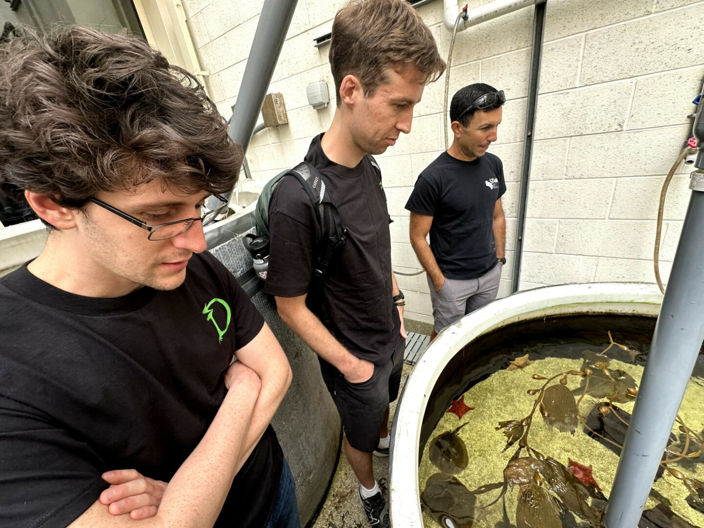

🎙️ Feature Interview
Meet Boulos Haddad: Rewriting Human Rules, Optimism & Building DragonSkin
"My optimism is deeply tied to my viewpoint that people are good in nature and that the options to do good in the world are plentiful... Traces back to an upbringing knowing that any human rule and limitation can be rewritten. Today's lows can turn into tomorrow's limitless highs."
founder journey
rewriting rules
dragonskin story
Read Full Feature Story